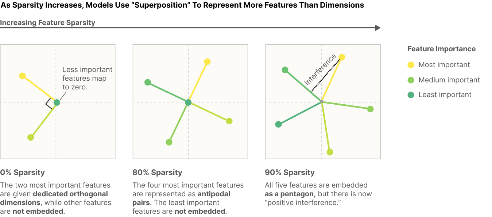
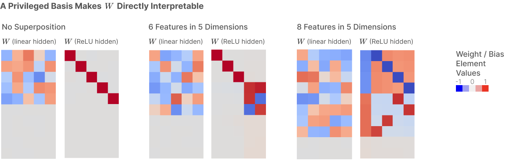

# CMSC 25750/35750: ## Large Language Models ## Lecture 5: Superposition and Sparse Autoencoders <p style="text-align: center;"> Chenhao Tan<br/> University of Chicago<br/> @ChenhaoTan, @chenhaotan.bsky.social<br/> chenhao@uchicago.edu </p>
## Logistics - Project updates - Any other logistics
## Today's agenda * Paper overviews * Deep dives * Discussion
## Today's agenda * Paper overviews * <span style="color: #767676;">Deep dives</span> * <span style="color: #767676;">Discussion</span>
## Toy Models of Superposition Elhage et al. (2022) ask: why are neurons sometimes monosemantic (responding to one feature) and sometimes polysemantic (responding to many unrelated inputs)? Using small ReLU networks trained on synthetic sparse data, they show that networks can represent more features than they have dimensions. This is called superposition. Whether a feature is stored in superposition depends on its sparsity and importance. <p class="citation"><a href="https://transformer-circuits.pub/2022/toy_model/index.html">Elhage et al., 2022</a></p>
## Toy Models of Superposition Key results: - Superposition is a real, observed phenomenon in toy models - Whether a feature is stored in superposition is governed by a phase change, determined by sparsity and relative importance - Features in superposition organize into geometric structures: antipodal pairs, triangles, pentagons, tetrahedra - Computation can occur in superposition <p class="citation"><a href="https://transformer-circuits.pub/2022/toy_model/index.html">Elhage et al., 2022</a></p>
## Towards Monosemanticity Bricken et al. (2023) apply dictionary learning to a trained one-layer transformer, decomposing MLP activations into an overcomplete set of features using a sparse autoencoder. The sparse autoencoder finds features that are more monosemantic than neurons: they activate specifically for Arabic script, DNA sequences, base64 strings, and thousands of other interpretable contexts. <p class="citation"><a href="https://transformer-circuits.pub/2023/monosemantic-features">Bricken et al., 2023</a></p>
## Towards Monosemanticity Key results: - Sparse autoencoders extract features that are substantially more interpretable than neurons, as measured by human judges and automated interpretability - Some features are effectively invisible in the neuron basis but clearly visible in the feature basis - Features can be used to causally intervene on model behavior: activating the Arabic script feature causes the model to generate Arabic text - Features show universality across models and feature splitting as dictionary size grows <p class="citation"><a href="https://transformer-circuits.pub/2023/monosemantic-features">Bricken et al., 2023</a></p>
## Today's agenda * <span style="color: #767676;">Paper overviews</span> * Deep dives * <span style="color: #767676;">Discussion</span>
## What is superposition? Superposition occurs when a network represents more features than it has dimensions. Features are stored as almost-orthogonal directions. Because high-dimensional spaces can hold exponentially many almost-orthogonal vectors (Johnson-Lindenstrauss), this is feasible. The cost is interference: when one feature activates, it weakly activates other features. For sparse features, this cost is low: features rarely co-occur, so interference is rare. The ReLU non-linearity can then filter out the small residual noise. <p class="citation">Elhage et al., 2022</p>
## What is superposition? <p></p> <p class="citation">Elhage et al., 2022</p>
## The toy model Elhage et al. train a bottleneck model: \\[ h = Wx, \quad x' = \text{ReLU}(W^T h + b) \\] where \\(x \in \mathbb{R}^n\\) is a sparse feature vector (each \\(x_i = 0\\) with probability \\(S\\)) and \\(h \in \mathbb{R}^m\\) with \\(m \ll n\\). The loss weights reconstruction by feature importance \\(I_i\\): \\[ L = \sum_i I_i (x_i - x'_i)^2 \\] A linear model (no ReLU) never exhibits superposition. The ReLU output model does, when features are sparse. <p class="citation">Elhage et al., 2022</p>
## Superposition as a phase change For a given feature, there are three regimes: 1. Not learned at all 2. Learned and given a dedicated dimension (monosemantic) 3. Learned and stored in superposition (polysemantic) The transition between regimes is sharp, like a phase change. Two factors determine which regime a feature falls into: - Sparsity: sparser features are more likely to enter superposition - Relative importance: a more important feature is more likely to get a dedicated dimension <p class="citation">Elhage et al., 2022</p>
## The geometry of superposition When many features of equal importance and sparsity are stored in superposition, they organize into regular geometric structures: - Antipodal pairs: two features packed into one dimension as \\(+W_i\\) and \\(-W_i\\) - Triangles, pentagons: three or five features arranged as vertices of a regular polygon - Tetrahedra and other polytopes in three or more dimensions The model is essentially solving a variant of the Thomson problem: how to pack points on a sphere to minimize energy. As sparsity increases, more features can be packed in. <p class="citation">Elhage et al., 2022</p>
## Feature dimensionality Each feature can be assigned a dimensionality: \\[ D_i = \frac{||W_i||^2}{\sum_j (\hat{W}_i \cdot W_j)^2} \\] where \\(\hat{W}_i = W_i / ||W_i||\\) is the unit vector in the direction of feature \\(i\\). A feature with a dedicated dimension has \\(D_i = 1\\). A feature in an antipodal pair has \\(D_i = 1/2\\). A feature in a pentagon has \\(D_i = 1/5\\). The sum of all feature dimensionalities approximately equals the number of embedding dimensions. This makes precise the sense in which a model can represent more features than dimensions. <p class="citation">Elhage et al., 2022</p>
## Correlated and anti-correlated features The geometry of superposition also depends on correlations between features: Correlated features (co-occurring bundles) prefer to be orthogonal to each other, forming local almost-orthogonal bases. When there is not enough space, correlated features collapse into their principal component. Anti-correlated features (mutually exclusive features, like different languages) prefer to be antipodal. Since they never co-occur, negative interference is cheap. This explains why polysemantic neurons often respond to mutually exclusive inputs: languages, syntactic contexts, or disjoint token classes. <p class="citation">Elhage et al., 2022</p>
## Correlated and anti-correlated features <img src="images/correlated.png" style="max-width: 60%;"> <p class="citation">Elhage et al., 2022</p>
## Why ReLU creates a privileged basis In a layer without a non-linearity, you can apply any rotation \\(O\\) to the hidden activations and compensate by applying \\(O^{-1}\\) to the next layer's weights. The model is identical. No basis direction is special. Adding ReLU breaks this symmetry. ReLU is applied coordinate-wise: \\(\text{ReLU}(h)_k = \max(0, h_k)\\). Rotating the hidden layer changes which coordinates are zeroed out. The rotated model is not equivalent. This makes the basis directions (neurons) special: they are the directions along which the non-linearity acts. Features that align with neurons are directly gated by ReLU. Features that do not align must be recovered from a mix of neurons, each of which was gated independently. <p class="citation">Elhage et al., 2022</p>
## Why ReLU creates a privileged basis <p></p> <p class="citation">Elhage et al., 2022</p>
## Sparse autoencoders If superposition cannot be prevented, we can try to undo it after training using dictionary learning. A sparse autoencoder has an encoder and a decoder: \\[ f_i(\mathbf{x}) = \text{ReLU}(W_e (\mathbf{x} - \mathbf{b}_d) + \mathbf{b}_e)_i \\] \\[ \hat{\mathbf{x}} = W_d \mathbf{f}(\mathbf{x}) + \mathbf{b}_d \\] It is trained to reconstruct MLP activations with an MSE loss plus an L1 penalty to encourage sparsity: \\[ L = ||\mathbf{x} - \hat{\mathbf{x}}||_2^2 + \lambda ||\mathbf{f}(\mathbf{x})||_1 \\] The dictionary \\(W_d\\) is overcomplete: more columns (features) than the MLP has neurons. <p class="citation">Bricken et al., 2023</p>
## Experimental setup Bricken et al. train sparse autoencoders on a one-layer transformer with a 512-neuron MLP, using 8 billion data points drawn from The Pile. Dictionary sizes range from 512 (1×) to 131,072 (256×) features. Most analysis focuses on a 4,096-feature run (A/1, 8× expansion). Training required two key engineering choices: - Scale matters: more data produces sharper, more interpretable features - Dead neuron resampling: periodically reinitialize neurons that have not fired, to use the full dictionary capacity <p class="citation">Bricken et al., 2023</p>
## Monosemantic features: examples Four features are studied in depth: - Arabic script feature (A/1/3450): fires almost exclusively on tokens in Arabic, Farsi, and Urdu script; 81% of its active tokens are Arabic script, despite Arabic being only 0.13% of the dataset - DNA feature (A/1/2937): fires on strings of ATCG nucleotides - Base64 feature (A/1/2357): fires on base64-encoded strings - Hebrew feature: fires on text in Hebrew script For each feature, the authors demonstrate activation specificity, sensitivity, causal downstream effects, and universality across models. <p class="citation">Bricken et al., 2023</p>
## Features are not neurons The Arabic script feature (A/1/3450) is effectively invisible in the neuron basis. When searching for neurons that respond to Arabic script: only one neuron has a single Arabic example in its top 20. The most correlated neuron responds to a mixture of many non-English languages, with Arabic as a small sliver. The feature vector has 27 neurons with coefficients above 0.1 in magnitude, and the three largest coefficients are negative. In contrast, the feature cleanly separates Arabic from non-Arabic tokens in its activation distribution and logit weights. <p class="citation">Bricken et al., 2023</p>
## Features are not neurons <img src="images/feature_activation.png" style="max-width: 80%;"> <p class="citation">Bricken et al., 2023</p>
## Features are not neurons <img src="images/dictionary.png" style="max-width: 80%;"> <p class="citation">Bricken et al., 2023</p>
## Causal intervention via features Features can be used to steer model behavior: Ablating a feature (setting it to zero throughout a context) changes predictions in the expected direction. Ablating the Arabic script feature hurts predictions of Arabic tokens and helps predictions of non-Arabic tokens. Pinning a feature to a high value and sampling from the model causes the model to generate text matching the feature's context. Pinning the Arabic script feature causes the model to generate Arabic text; pinning the base64 feature causes generation of base64 strings. <p class="citation">Bricken et al., 2023</p>
## How interpretable is the typical feature? Three approaches to measure interpretability at scale: Manual human scoring: median neuron scored 0 (annotator could not form a hypothesis); median feature interval scored 12 (confident, specific, consistent hypothesis). Automated interpretability via activations: Claude generates explanations of features, then predicts activations on new tokens. Features are predicted better than neurons (higher Spearman correlation). Automated interpretability via logit weights: given an explanation, Claude predicts whether a token should be upweighted. 74% accuracy for features vs 58% for neurons (50% is chance). <p class="citation">Bricken et al., 2023</p>
## How much of the model do features explain? For the main run A/1 (4,096 features), the sparse autoencoder recovers 79% of the log-likelihood loss reduction provided by the MLP layer. With more features (A/5: 131,072 features), recovery reaches 94.5%. The remaining loss may reflect features not yet recovered, features that are not fully monosemantic, or intrinsic limitations of the dictionary learning approach. Replacing MLP activations with activations from a randomized-weights model gives features that are not interpretable, confirming that interpretability reflects model structure, not just dataset statistics. <p class="citation">Bricken et al., 2023</p>
## Feature splitting As dictionary size grows, features split into finer subcategories. The base64 feature in A/0 (512 features) splits into three in A/1 (4,096 features): - A feature responding to letters in base64 strings - A feature responding to digits in base64 strings (and correctly predicting non-digit next tokens, due to tokenization) - A feature responding specifically to base64 strings that encode ASCII text Different dictionary sizes offer different "resolutions" for viewing the same underlying structure. This suggests dictionary learning is not finding arbitrary features but progressively refining a structure that is present in the model. <p class="citation">Bricken et al., 2023</p>
## Universality The same features appear across different models trained on the same data. For the Arabic script feature (A/1/3450), the closest feature in a second independently-trained transformer (B/1/1334) has an activation correlation of 0.91 and shows the same pattern of specificity and logit weights. Across all features in A/1, the median activation correlation with the most similar feature from B/1 is 0.72. Across neurons, it is only 0.46. This suggests the features found by sparse autoencoders are not artifacts of a particular model initialization, but reflect something about the task and dataset. <p class="citation">Bricken et al., 2023</p>
## Feature motifs The features found fall into recurring types: Context features: fire on any token from a particular context (Arabic script, DNA, base64, code). Token-in-context features: fire on a specific token in a specific context. In A/4, over a hundred features respond to the token "the" in different contexts. Trigram features: features that predict the completion of a specific short sequence (e.g., a feature predicting "19" in "COVID-19"). MLP layers are well positioned to implement N-token conjunctions that attention heads handle less naturally. <p class="citation">Bricken et al., 2023</p>
## Methods - Toy model with synthetic sparse data (Elhage et al.): train a bottleneck ReLU network and visualize the weight matrix \\(W^TW\\) to measure superposition - Phase diagram (Elhage et al.): vary feature importance and sparsity independently to map the boundary between superposition and dedicated dimensions - Sparse autoencoder (Bricken et al.): train an overcomplete dictionary on MLP activations with MSE + L1 loss - Feature interpretability rubric (Bricken et al.): score features by confidence, consistency, and specificity across the full activation spectrum - Automated interpretability (Bricken et al.): use a language model to generate and test feature explanations
## Today's agenda * <span style="color: #767676;">Paper overviews</span> * <span style="color: #767676;">Deep dives</span> * Discussion
## Discussion 1: What is a feature/concept? We observe neurons (and SAE features) that respond to Arabic script, DNA, base64, "the" in mathematical prose... What makes something a feature? When do two features count as the same concept? Does the definition matter for interpretability research?
## Discussion 2: Approaches to interpretability * Extrapolation interpretability * Mathematical interpretability (e.g., information geometry, QK/OV circuits) * Empirical interpretability (e.g., ablations, probes, SAEs) How should these approaches relate? What would it mean to truly understand a large model?
# Questions?